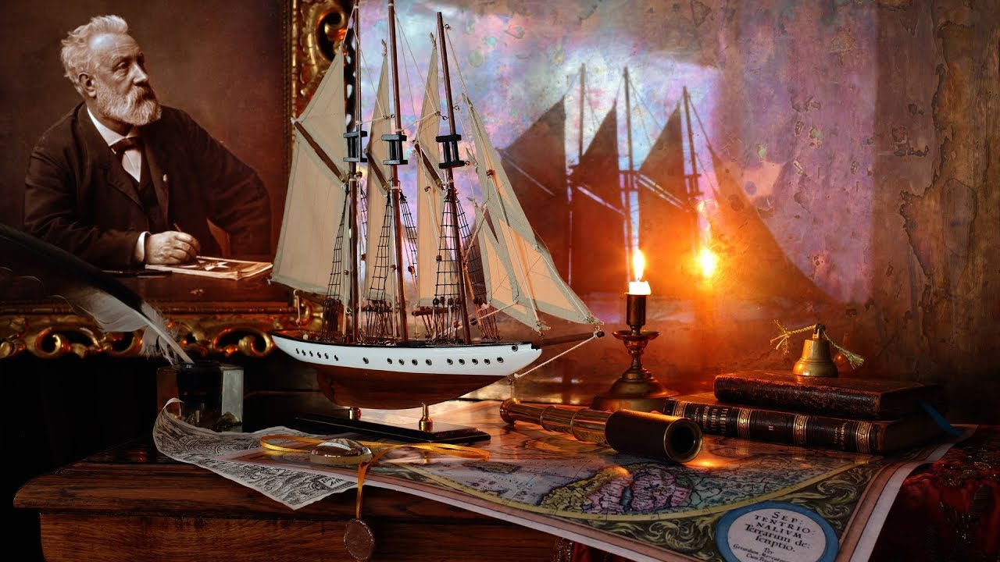
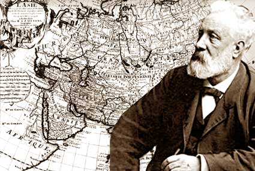
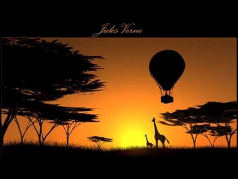
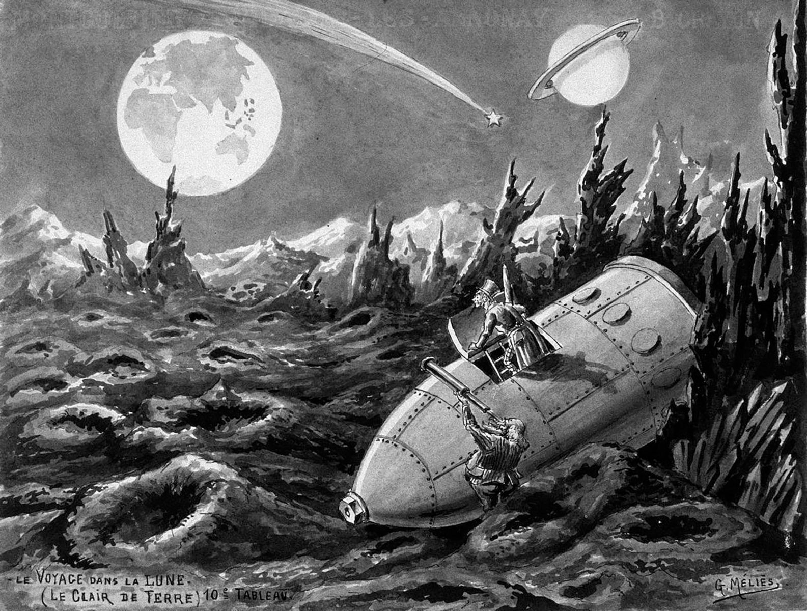
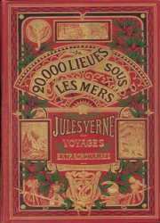
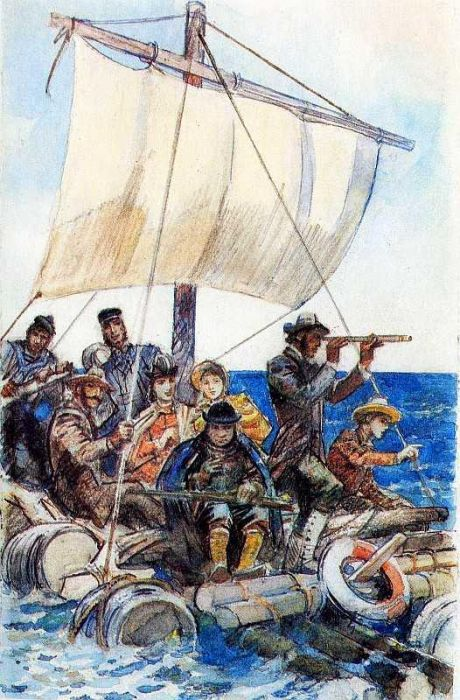
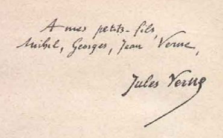
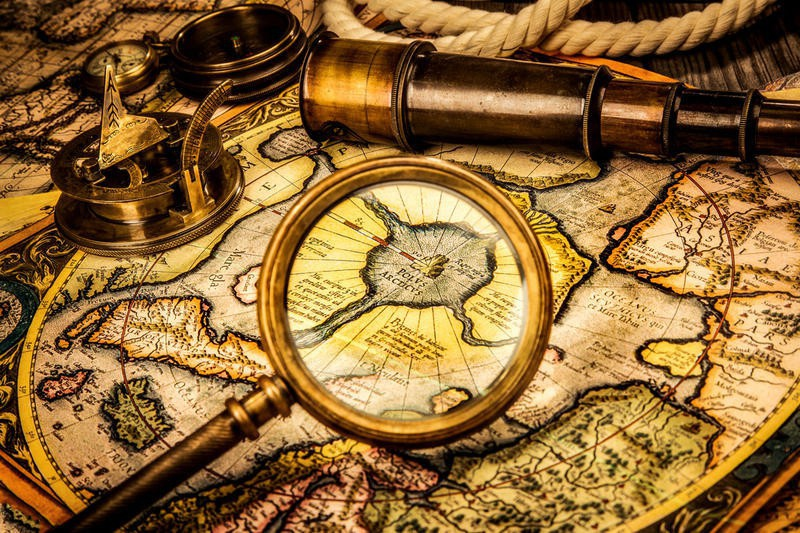

Головна

ЖУЛЬ ГАБРІЄЛЬ ВЕРН (1828-1905)
Жуль Верн — французький письменник-фантаст був і залишився вірним супутником юності. Перші ж романи принесли йому всенародне визнання. Щойно книги французького письменника виходили друком, вони негайно перекладалися багатьма мовами й поширювалися в усьому світі.
Жуль Верн був у розквіті творчих сил, він ще не встиг здійснити й половини задуманого, коли захоплені сучасники стали називати його "всесвітнім мандрівником", "віщуном", "чарівником", "пророком", "провидцем", "винахідником без майстерні" (заголовки статей, що з'являлися за його життя). А він просто задумав описати всю земну кулю — природу різних кліматичних зон, тваринний і рослинний світ, традиції і звичаї всіх народів планети. І не просто описати, як це роблять географи, а втілити цей задум у багатотомній серії романів, що її він назвав "Незвичайні подорожі".
Працьовитість Жуля Верна вражає масштабністю. Серія включає шістдесят три романи та два збірники повістей і оповідань, виданих у 97 книгах. У повному обсязі — близько тисячі друкованих аркушів або вісімнадцять тисяч книжкових сторінок!
Жуль Верн працював над "Незвичайними подорожами" понад сорок років (з 1862 до початку 1905 року), видання ж усієї серії розтяглося більше ніж на піввіку. За цей час змінилися покоління школярів, для яких він писав свої книги. Пізні романи Жуля Верна потрапляли в нетерплячі руки синів і онуків його перших читачів.
"Незвичайні подорожі" у сукупності — це універсальний географічний нарис земної кулі. Якщо розподілити романи за місцем дії, то виявиться, що в чотирьох романах описуються кругосвітні подорожі, у п'ятнадцятьох — країни Європи, у восьми — Північна Америка, у восьми — Африка, у п'ятьох — Азія, у чотирьох — Південна Америка, у чотирьох — Арктика, у трьох — Австралія й Океанія й в одному — Антарктида. Крім того, у сімох романах місцем дії слугують моря й океани. Чотири романи складають цикл "робінзонад" — дія розгортається на незаселених островах. І нарешті, у трьох романах події відбуваються у міжпланетному просторі. До того ж у багатьох творах — не тільки "кругосвітнього" циклу — герої мандрують із країни в країну. Можна сказати без перебільшення, що сторінки книг Жуля Верна переповнюють морські хвилі, пісок пустель, вулканічний попіл, арктичні вихори, космічний пил. Місце дії в його романах — планета Земля, і не тільки Земля, але й Всесвіт. Географія і природознавство сусідують у творах письменника. Герої Жуля Верна завжди подорожують. Долаючи величезні відстані, вони прагнуть виграти час. Досягнення небувалої швидкості вимагає новітніх засобів пересування. Жуль Верн "удосконалив" всі види транспорту від сухопутних до уявлюваних міжпланетних. Його герої створюють швидкохідні машини, підводні й повітряні кораблі, досліджують вулкани та глибини морів, проникають у недоступні нетрі, відкривають нові землі, стираючи з географічних карт останні "білі плями".Увесь світ слугує їм майстернею для експериментів. На дні океану, на незаселеному острові, на Північному полюсі, у міжпланетному просторі,— де б вони не були, скрізь їхня лабораторія, вони працюють, діють, сперечаються, впроваджують у дійсність свої зухвалі мрії.
В особі Ж. Верна поєднувалися мовби кілька постатей. Він був справжнім засновником наукової фантастики, що ґрунтувалася на науковій вірогідності й нерідко на науковому передбаченні, був чудовим майстром пригодницького роману, жагучим пропагандистом науки та її майбутніх здобутків.
Спираючись на пошуки наукової думки, він зображував бажане як уже здійснене. Винаходи, що ще не набули застосування, моделі механізмів, що проходили випробування, машини, що лише намічалися в ескізах, він представляв у закінченому, ідеальному вигляді. Звідси — неймовірні збіги мрій письменника з втіленням подібних ідей у життя. Але він не був ні "віщуном", ні "пророком". Його герої вирішували задачі, підказані самим життям — бурхливим розвитком промисловості, транспорту, зв'язку. Науково-технічні фантазії романіста майже ніколи не перевершували можливостей їхнього здійснення на більш високому ступені наукового й технічного прогресу.
Саме в цих напрямках працює допитлива думка героїв "Незвичайних подорожей". Винахідники, інженери, будівельники, вони споруджують прекрасні міста, зрошують пустелі, знаходять способи прискорювати ріст рослин за допомогою апаратів штучного клімату, конструюють електричні прилади, що дозволяють бачити і чути на значних відстанях, мріють про практичне використання внутрішнього тепла Землі, енергії сонця, вітру й морського прибою, про можливості нагромадження запасів енергії в могутніх акумуляторах. Вони вишукують способи продовження життя і заміни спрацьованих органів тіла новими, винаходять кольорову фотографію, звукове кіно, автоматичну лічильну машину, синтетичні харчові продукти, одяг зі скляного волокна й чимало інших чудових речей, що полегшують життя і працю людини та допомагають їй перетворювати світ.
Коли Жуль Верн писав свої книги, Арктика ще не була завойована, полюси ще не були відкриті, Центральна Африка, Внутрішня Австралія, басейн Амазонки, Памір, Тибет, Антарктида ще майже не були вивчені. Герої Жуля Верна здійснюють географічні відкриття, випереджаючи справжні.
Перетворення світу — головне в його творчості. Всесильний розум опановує природу. Усі чотири стихії: земля, вода, повітря, вогонь — неминуче скоряться людям. Об'єднаними зусиллями людство перетворить і поліпшить планету.
Саме звідси започатковується життєствердний пафос найкращих творів Жуля Верна. Він створив роман нового типу — роман про науку та її безмежні можливості. Фантазія в нього подружилася з наукою і стала її нерозлучною супутницею. Фантазія, окрилена науковими пошуками, перетворилася на наукову фантастику.
Разом з новим романом у літературу ввійшов і новий герой — лицар науки, безкорисливий учений, готовий в ім'я своїх творчих ідей, заради здійснення великих надій здійснити подвиг, піти на будь-яку жертву. У майбутнє спрямовані не тільки науково-технічні фантазії Жуля Верна, але й його герої — першовідкривачі нових земель і творці дивовижних машин. Час диктує письменникові свої вимоги. Жуль Верн вловив ці вимоги й відгукнувся на них "Незвичайними подорожами".
Знайти свою мету виявилося важче, ніж покласти життя на її досягнення. Старший син адвоката, Жуль Верн, знав ще замолоду, що давня сімейна традиція вимагає стати правознавцем і згодом успадкувати контору батька. Але бажання юнака розходилися із сімейними сподіваннями.
Він виріс у приморському місті Нанті, марив морем і кораблями і навіть спробував — йому було тоді одинадцять років — утекти до Індії, найнявшись юнгою на шхуну "Корали". Однак невблаганний батько посилає його після ліцею до паризької Школи права. Море залишається світлою мрією, а любов до поезії, театру та музики розтрощує твердиня батьківської влади. На догоду батькові, вистраждавши абияк диплом правознавця, він не йде служити в адвокатську контору в Нанті, а обирає напівголодне існування літератора, який перебивається мізерними заробітками — пише комедії, водевілі, драми, складає лібрето комічних опер і після кожної чергової невдачі працює з іще більшим азартом.
У той же час жадібна допитливість, захоплення природничими науками змушують його відвідувати Національну бібліотеку, лекції і вчені диспути, робити виписки з прочитаних книг, не знаючи ще, на що придасться йому ця купа всіляких довідок з географії, астрономії, навігації, історії техніки й наукових відкриттів.
Якось — це було всередині 1850-х років — у відповідь на умовляння батька відмовитися від нікчемних занять і повернутися до Нанту юнак рішуче заявив, що він не сумнівається у своєму майбутньому й до тридцяти п'яти років посяде в літературі міцне місце. Йому виповнилося 27 років. 3. безлічі передбачень Жуля Верна, що збулися з більшим чи меншим наближенням, цей перший прогноз виявився бездоганно точним.
Але пошуки ще тривали. Кілька надрукованих оповідань з морської тематики, яким сам він не надавав великого значення, хоча пізніше й включив їх до своєї величезної серії, були віхами на шляху до "Незвичайних подорожей". Лише на зламі шістдесятих років, переконавшись, що тепер він цілком підготовлений, Жуль Верн став розробляти нові терени. Це було усвідомлене художнє відкриття. Він відкрив для літератури поезію науки. Пориваючи з усім, що його колись гальмувало, він сповістив друзям, що знайшов свою золоту жилу.
Восени 1862 року Жуль Верн закінчив свій перший роман. Його давній покровитель Александр Дюма порекомендував звернутися до Етцеля, розумного, досвідченого видавця, який підшукував здібних співробітників для юнацького "Журналу виховання і розваги". З перших же сторінок рукопису Етцель вгадав, що випадок привів до нього саме того письменника, якого бракувало дитячій літературі. Етцель швидко прочитав роман, висловив свої зауваги й віддав Жюлю Верну на допрацювання. Уже через два тижні рукопис повернувся у виправленому вигляді, і на початку 1863 року роман вийшов у світ.
Сама назва — "П'ять тижнів на повітряній кулі" — не могла пройти непоміченою. Успіх перевершив усі сподівання й ознаменував народження "роману про науку", у якому захопливі пригоди поєднуються з популяризацією знань і обґрунтуванням різних гіпотез. Так, уже в цьому першому романі про уявлювані географічні відкриття в Африці, зроблені з пташиного польоту, Жуль Верн "сконструював" аеростат з температурним керуванням і безпомилково напророкував місцезнаходження тоді ще не відкритих джерел Нілу.
Романіст уклав з видавцем довгостроковий договір, погодившись писати по три книги на рік. Тепер він міг без перешкод, не думаючи про завтрашній день, узятись до здійснення численних задумів. Етцель стає його другом і порадником. У Парижі вони часто бачаться, а коли Жуль Верн їде працювати до моря або курсує уздовж берегів Франції, замкнувшись у "плавучому кабінеті" на борту своєї яхти "Сен-Мішель", вони регулярно обмінюються листами. Із запізненням знайшовши своє життєве поприще, письменник видає книгу за книгою, і що не роман, то шедевр. Фантазію повітряну змінює геологічна — "Подорож до центру Землі" (1864). Потім з'являється фантазія арктична — "Подорож і пригоди капітана Гаттераса" (1864-65).
Поки читачі разом із завзятим Гаттерасом повільно просувалися до Північного полюсу на сторінках "Журналу виховання і розваги", Жуль Верн створив фантазію космічну — "Із Землі на Місяць" (1865), відклавши продовження ("Навколо Місяця"), бо мав завершити до терміну давно задуманий та оголошений у журналі роман про кругосвітню подорож — "Пригоди Роберта Гранта". Цього разу роман без усякої фантастики виріс до трьох томів! Жуль Верн ще в рукописі змінив заголовок, і він став остаточним — "Діти капітана Гранта".
Працюючи щодня від зорі до зорі, з п'ятої ранку до сьомої вечора, він порівнює себе з першероном — ломовим конякою, котрий і відпочиває у своїй же запряжці. Надлишок нерозтрачених сил допомагає йому бадьоро тягти вгору до знемоги перевантажений віз.
Неухильно виконуючи умови договору — три книги на рік! — улітку 1866 року, спокушений перспективою розрахуватися зі старими боргами, Жуль Верн береться на замовлення Етцеля за додаткову працю — "Ілюстровану географію Франції". Використовуючи багато джерел, він устигає робити скрупульозний опис двох департаментів за тиждень, видаючи на-гора по 800 рядків — майже півтора друкованих аркуші на день. І це не враховуючи основної роботи — над третьою частиною "Дітей капітана Гранта", одного із найчудовіших романів, що він будь-коли створював. Вручивши видавцеві свій п'ятий роман, Жуль Верн вирішив об'єднати уже надруковані й ще не написані твори у загальну серію "Незвичайні подорожі".
Читачі "Журналу виховання і розваги" почали кругосвітнє плавання з 1866-го до 1868 року, коли роман "Діти капітана Гранта" вийшов окремим виданням і ще більше додав слави Жулю Вернові. У цьому романі кругосвітня подорож вільна від усякої фантастики. Дія розвивається винятково за законами внутрішньої логіки, без будь-яких зовнішніх пружин. Діти вирушають на пошуки зниклого безвісти батька. їхній батько — шотландський патріот, котрий не бажав примиритися з тим, що Англія поневолила Шотландію. На думку Гранта, інтереси його батьківщини не збігалися з інтересами англосаксів, і він вирішив заснувати вільну шотландську колонію на одному з островів Тихого океану. Чи мріяв він, що ця колонія колись доможеться державної незалежності, як це сталося зі Сполученими Штатами? Тієї незалежності, що неминуче рано чи пізно завоюють Індія й Австралія? Звичайно, він міг так думати. І легко припустити, що англійський уряд чинив капітанові Грантові перешкоди. Проте він підібрав команду й відплив досліджувати великі острови Тихого океану, щоб знайти підходяще місце для поселення. Така експозиція. Потім лорд Гленарван, однодумець капітана Гранта, випадково знаходить документ, що пояснює його зникнення. І таким чином, кругосвітня подорож мотивується волелюбними прагненнями героїв. А далі зіпсований документ поведе хибним слідом. Потім з'явиться вчений-усезнайка, себто француз Жак Паганель, секретар Паризького географічного товариства, почесний член ледве не всіх географічних товариств світу. Через його анекдотичну неуважність сюжетні хитросплетіння будуть ще більше ускладнюватися. Паганель потрібен не лише для пожвавлення дії. Ця людина — ходяча енциклопедія. Він знає абсолютно все. У закапелках його пам'яті безліч фактів, які він буде викладати при кожній зручній нагоді. Але наука не повинна відриватися від дії. Роман сповнений захопливих пригод. І разом з тим, він географічний, це свого роду цікава географія. Труднощі полягали в тім, щоб пізнавальні дані не відокремлювалися від тексту, щоб дія не могла без них просуватися. У таких випадках Жуля Верна завжди виручала його дивовижна винахідливість. "Парі Жака Паганеля і майора Мак-Наббса" (ч. 2, гл. 4) — типовий приклад белетризації наукової теми: історико-географічний екскурс, що займає цілий розділ, вростає в саму тканину оповіді. Згадаємо, як це зроблено. Мандрівники прибувають до Австралії. Географ повідомляє своїм супутникам, що з 1606 по 1862 рік дослідженням центральних областей і берегів Австралії займалося більше п'ятдесятьох експедицій. Майор Мак-Наббс висловлює сумнів. "Так я доведу вам! — вигукнув географ, який незмінно ставав дуже збудженим, коли йому суперечили". Укладено знамените парі: ставка — карабін "Пурдей, Моор і Діксон" проти підзорної труби фірми "Секретана". Паганель починає лекцію про історію досліджень Австралії. Він доводить свою правоту, назвавши імена сімдесятьох мандрівників. Інтерес слухачів Паганеля, а разом з ними і читачів, зростає усе більше в міру того, як перелік дослідників наближається до домовленої кількості. Подібні белетристичні прийоми Жуль Верн кожного разу варіює, коли йому необхідно ввести відступ з наукової чи історичної тематики. Він володіє умінням захоплювати читачів навіть такими, здавалося б, сухими предметами, як опис пристроїв і взаємодії деталей машин і технології обробки хімічного продукту. Секрет полягає в умінні зв'язувати в один сюжетний вузол успіх або невдачу будь-якого задуму героя з витвором його рук — роботою машини або отриманням того ж хімічного продукту ("Двадцять тисяч льє під водою", "Таємничий острів" та ін.).
У середовищі персонажів "Незвичайних подорожей" ми знаходимо представників усіх людських рас, що включає більшість націй, десятки національностей, народностей та племен. Галерея образів Жуля Верна, що включає кілька тисяч персонажів — населення цілого міста! — дивовижно багата за етнічним складом. У цьому відношенні з Жулем Верном не може зрівнятися ніякий інший письменник.
Його ворожість до расових забобонів виразно проступає навіть у самому виборі позитивних персонажів, що представляють поряд з європейцями й американцями народи колоніальних і залежних країн. Щоб далеко не ходити за прикладами, згадаємо, якою шляхетністю і чуттям людської гідності наділений південноамериканський індіанець Талькав.
Жуль Верн співчував пригнобленим народам. Викриття рабовласництва, колоніальних грабежів, винищувальних загарбницьких воєн — постійний мотив "Незвичайних подорожей". Сатиричні випади проти британської колоніальної політики ми знаходимо й у "Дітях капітана Гранта". Австралійський хлоп'як Толіне, який одержав у школі першу нагороду з географії, упевнений, що англійцям належить уся земна куля. "От як викладають географію в Мельбурні! — вигукує Паганель.— Подумати тільки: Європа, Азія, Африка, Америка, Океанія — усе, увесь світ належить англійцям! До дідька! При такому вихованні я розумію, чому тубільці підкоряються англійцям".
З найбільшим обуренням автор говорить про так звані резервації — найбільш упосліджені й глухі райони, відведені для корінного населення Австралії. "Опанувавши країну, англійці викликали на допомогу колонізації убивство. Жорстокості були неймовірні. Вони поводилися в Австралії так само, як у Індії, де загинуло п'ять мільйонів індусів, так само, як у Капській області, де з мільйона готтентотів збереглося тільки сто тисяч".
Пізнавальний матеріал, зосереджений у "Дітях капітана Гранта", як і в інших романах Жуля Верна, звичайно, не справив би такого враження, якби всі ці описи, міркування, екскурси не спліталися з намірами і справами героїв. Люди відрізняються тут незвичайною моральною чистотою, фізичним і щиросердим здоров'ям, цілеспрямованістю, зібраністю, не знають ні лицемірства, ні розрахунку. Сміливцям, які вірять в успіх своєї справи, вдається будь-який, найважчий задум. Товариш виручає товариша з халепи. Сильний приходить на допомогу слабкому. Дружба міцніє від суворих випробувань. Лиходіїв завжди викривають, і вони несуть покарання за свої злочини. Справедливість завжди тріумфує, мрія завжди здійснюється.
Образи вигаданих героїв виліплені так рельєфно, що запам'ятовуються на все життя. Скажімо, той же Жак Паганель — хто не знає цього дивака-вченого? Фанатик науки, "ходяча енциклопедія", він завжди пересипає серйозні міркування забавними жартами й смішними витівками. Йому властиве невигубне почуття гумору. Разом з тим він приваблює сміливістю, добротою., справедливістю. Підбадьорюючи своїх супутників, Паганель не перестає жартувати навіть у часи знегод, коли йдеться про життя і смерть. У романі це — центральна постать. Без неї розпалася б уся композиція. Поруч з ним — шотландський патріот Гленарван, який робить усе можливе й неможливе, щоб розшукати по ледь вловних слідах, свого волелюбного співвітчизника, капітана Гаррі Гранта. Сильним і мужнім характером, що розкривається в дії і загартовується в боротьбі із суворими випробуваннями, наділені й юні герої Жуля Верна. Один з них — Роберт Грант. Для гідного сина відважного шотландця цілком природним є щиросердий порив — викликати на себе переслідування вовків, щоб врятувати від загибелі своїх друзів.
Шляхетним і чесним людям, учасникам експедиції Гленарвана, протистоїть волоцюга й авантюрист Айртон, висаджений на безлюдний острів за свої злодіяння. Цей загублений острівець, що лежить на 153° західної довготи і 37° 1М південної широти, позначений на сучасних географічних картах як риф Марія-Тереза. Французи іменували його островом Табором. Звідси й неуважність Жака Паганеля, що забув другу назву острова. На Таборі, або рифі Марія-Тереза, жили нові Робінзони — капітан Грант із двома матросами. І тут же залишиться на самоті спокутувати злочини перед власною совістю його колишній боцман Айртон. Здичавілого Айртона згодом знайдуть колоністи, які створили зразкову трудову комуну на уявлюваному острові Лінкольні — у 15 милях від Табору. У романі "Таємничий острів" (1875) зводяться сюжетні лінії "Дітей капітана Гранта" і "Двадцяти тисяч льє під водою" (доля Немо).
Таким чином, усі три романи утворять трилогію — осяйну триглаву вершину в гірському ланцюзі "Незвичайних подорожей".
Твори Жуля Верна послугували справі цивілізації і прогресу в усьому світі. На його романах виховувалися покоління юних читачів. Окрилена наукою фантазія будила розуми для майбутньої діяльності. Видатні вчені, винахідники, мандрівники з вдячністю згадували, що юнацьке захоплення Жюлем Верном допомогло їм знайти покликання, а іноді навіть наштовхувало на відкриття.
Минуло кілька десятиліть. Наука випередила чимало сміливих жульвернівських фантазій. "Наутилус" капітана Немо і "Альбатрос" Робура-Завойовника не запаморочать тепер голову жодному школяреві. Будь-якому хлопчикові легко пояснити, чому не можна відправитися на Місяць у гарматному ядрі й чому помилявся письменник, коли говорив про стан невагомості на "нейтральній" зоні, де притягання Місяця і Землі взаємно врівноважуються.
Вигадані Жулем Верном машини здаються тепер допотопними. Застаріли його наукові ідеї. Потребують виправлення навіть географічні описи. У світі відбулося стільки змін, наука досягла значної могутності. Але слава Жуля Верна не потьмяніла від часу. Твори талановитого письменника, як і раніше, залишаються молодими. Не старіють і не знецінюються герої "Незвичайних подорожей", їхня відвага, дерзання, подвиги. І не в тім його основна заслуга, що він передбачив підводний корабель, авіацію, звукове кіно, далекобійну артилерію і т.д., а у тому, котрий зумів знайти нового позитивного героя, що втілив у собі багато рис людини завтрашнього дня. Захоплюють, хвилюють справи героїв і їхні здійснення. Цим значною мірою і пояснюється величезна й досі популярність кращих романів Жуля Верна.
За тиражами й кількістю перекладів він і нині — один із найулюбленіших популярних письменників. Його читають скрізь, куди проникає друковане слово. У різних країнах з'являються все нові й нові видання творів Жуля Верна, п'єси, фільми, цілі серіали за сюжетами "Незвичайних подорожей".
Прихід космічної ери ознаменував вищий тріумф письменника, який передбачав штучні супутники й міжпланетні перельоти з Землі на Місяць.
Коли радянська космічна ракета вперше передала на Землю фотографії зворотної сторони Місяця, одному з "потойбічних" місячних кратерів було присвоєне ім'я "Жуль Верн". Кратер Жуль Верн примикає до Моря Мрії...
Основні твори:
- "Незвичайні подорожі"
- "П'ять тижнів на повітряній кулі"
- "Подорож до центра Землі"
- "Подорож і пригоди капітана Гаттера-са"
- "Таємничий острів"
- "Діти капітана Гранта"
- "Двадцять тисяч льє під водою"
- "Навколо світу за 80 днів"
- "Робур-завойовник"